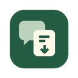

Spotify-Podcast-Extractor
FROM LISTENING TO NOTES
Your listening.
Ready for notes.
Keep the words. See who said them.
Export available transcripts on your device.
Markdown
TXT
HTML
JSON
CSV
→
A conversation, preserved
.md
Speaker 1
Speaker 2
Free & open source · English / 中文
Independent project. Not affiliated with or endorsed by Spotify or Obsidian.